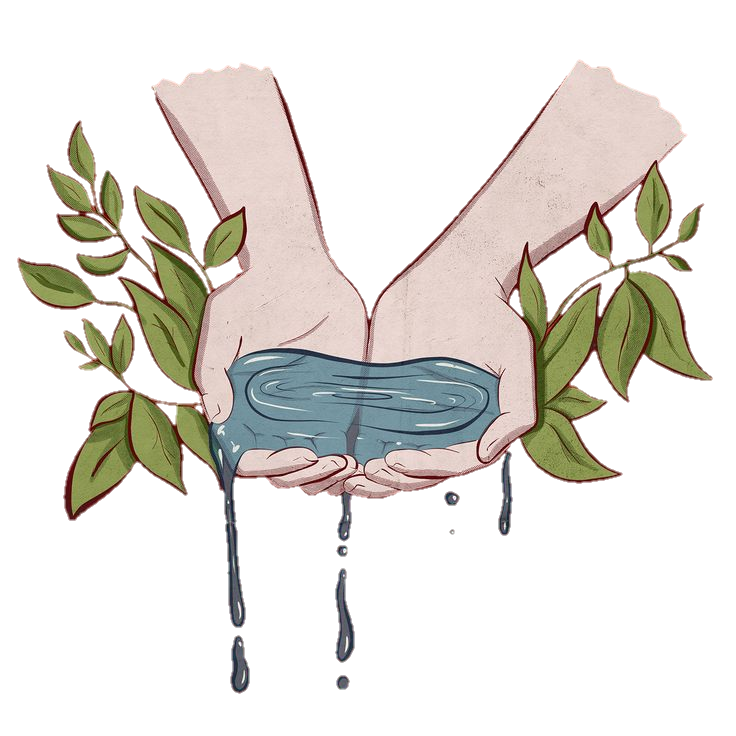

Impactos ambientais na escassez de água

A escassez de água tem sérios impactos ambientais que afetam a biodiversidade, a qualidade do solo e a sustentabilidade dos ecossistemas. Entender esses impactos é essencial para a conscientização e ação eficaz.
Redução da Biodiversidade
Desaparecimento de Espécies Aquáticas: A escassez de água pode levar à diminuição ou extinção de espécies que dependem de ambientes aquáticos, como peixes, anfíbios e plantas aquáticas.
Perda de Habitats: Rios, lagos e pântanos secos resultam na destruição de habitats essenciais para muitas espécies, afetando a cadeia alimentar e os ecossistemas locais.
Estresse Hídrico em Ecossistemas Terrestres: A falta de água pode afetar a vegetação que depende de fontes de água doce, o que impacta a fauna que se alimenta dessas plantas.
Degradação do Solo
Salinização: A irrigação inadequada e o uso excessivo de água subterrânea podem aumentar a salinidade do solo, tornando-o improdutivo para a agricultura.
Erosão do Solo: A escassez de água diminui a vegetação que protege o solo, aumentando a vulnerabilidade à erosão causada pelo vento e pela chuva.
Perda de Nutrientes: A falta de água prejudica a decomposição da matéria orgânica e a ciclagem de nutrientes, empobrecendo o solo e reduzindo sua fertilidade.
Alterações Climáticas
Eventos Climáticos Extremos: A escassez de água pode intensificar eventos climáticos extremos, como secas prolongadas e ondas de calor, agravando os efeitos das mudanças climáticas.
Mudanças nos Padrões de Precipitação: A alteração no ciclo hidrológico devido à falta de água pode levar a padrões de precipitação mais erráticos e menos previsíveis.
Aumento das Temperaturas Locais: A redução de corpos d'água e vegetação pode contribuir para o aumento das temperaturas locais, exacerbando o efeito de ilhas de calor urbanas e impactando o clima regional.
A escassez de água provoca uma série de impactos negativos que afetam não apenas o meio ambiente, mas também a vida humana, exigindo ações urgentes para mitigar seus efeitos e garantir a sustentabilidade dos recursos hídricos.